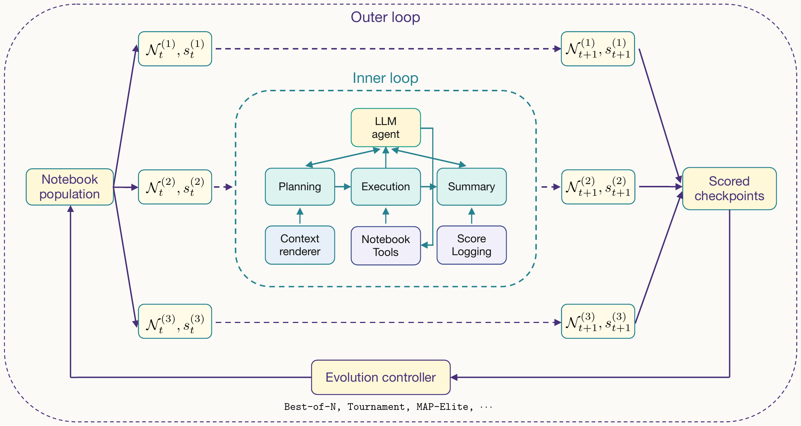

Long-horizon problem solving depends on what an agent can remember, inspect, execute, and revise. NotEvolve makes the notebook itself the agent's world model. Instead of evolving only a program file or appending text to a transcript, the system evolves complete notebook branches that contain executable code, natural-language plans, intermediate outputs, plots, summaries, and hidden kernel state.
Why a Notebook?
Evolvable State
A branch is a full notebook state, denoted as Nt(i), rather than a single source file. Selection can preserve whole research trajectories.
Multimodal Memory
Cells store plans, code, text outputs, tables, images, and summaries. The renderer exposes only the useful parts to the LLM context.
Executable Environment
The kernel keeps helper functions, cached data, solver states, and best-known variables alive, so later cells can build on earlier experiments.
How NotEvolve Runs
NotEvolve has an outer loop and an inner loop. The outer loop is a general evolution controller: it receives a population of notebook branches and their scores, then proposes the next population by selection, mutation, recombination, tournament search, MAP-Elites, or another evolution strategy. The inner loop runs one branch for one round.

Context Management
A raw Jupyter notebook is a verbose JSON document with execution metadata, widget state, and potentially long cell outputs. NotEvolve instead renders the notebook into a compact text view, exposes only the cells that are useful for the current decision, and lets the agent actively summarize, fold, unfold, and delete cells as the notebook grows.
Render notebook JSON into compact LLM context.
Append new cells, summarize runs, and clip long outputs.
Fold useful history and remove failed branches of work.
(50 lines) def baseline(): ...
output: score = 0.80
(34 lines) def attempt_a(): ...
clipped output: score = 0.60
(48 lines) def attempt_b(): ...
summary: score = 1.00
(48 lines) def attempt_b(): ...
best output retained
Results
We evaluate NotEvolve across three settings: mathematical optimization with directly evaluable objectives, Terminal Bench software tasks with a local open-weight model, and MLEBench-style Kaggle workflows with long-horizon data and modeling loops.
Mathematical Optimization
Under the same Gemini 3 Flash base model, NotEvolve matches or exceeds AlphaEvolve/OpenEvolve-style baselines on the tested mathematical optimization tasks.
| Problem | AlphaEvolve | OpenEvolve | NotEvolve |
|---|---|---|---|
| Circle Packing ↑ | 2.635 | 2.4672 | 2.635983 |
| Erdos Min-Overlap ↓ | 0.380923 | 0.4334 | 0.38089 |
| Heilbronn Triangle ↑ | 0.03653 | 0.0349 | 0.03653 |
| Min-Max Distribution ↑ | 0.24004706 | 0.2300 | 0.24005088 |
Terminal Bench
We adapt ten Terminal Bench tasks and run them with the same locally served Nemotron-3-Nano-30B model. The notebook harness gives the model persistent executable state, shell outputs, intermediate files, and error-recovery context.
MLEBench-style Kaggle Tasks
We compare NotEvolve with AIDE, CheetahHarness, and OpenEvolve on public Kaggle-style MLEBench tasks using the same locally hosted Nemotron-120B-Super model. This setting stresses notebook memory: the agent must inspect data, build pipelines, cache intermediate artifacts, recover from errors, and iterate on submissions.
State Matters
The largest gains appear when progress depends on intermediate artifacts: evaluated layouts, shell outputs, trained models, cached data, and recoverable failed attempts.
Cost Tradeoff
The notebook state improves long-horizon behavior, but rich context can be expensive. Better state distillation is a key direction for future versions.
Case Study: Circle Packing
The Circle Packing task asks the agent to place 26 circles inside the unit square and maximize the sum of radii while keeping all circles non-overlapping and within the boundary. The notebook is useful here because the agent can repeatedly score layouts, visualize gaps, keep the best layout in kernel variables, and warm-start new solvers from previous cells.
Current notebook behavior
Grid baseline
A simple grid gives a valid but loose packing.
Executable Scoring
Each candidate is evaluated in the notebook, so the score becomes an immediate signal for the next branch and the next outer-loop selection step.
Visual Diagnosis
Plots reveal empty regions and contact structure that are hard to infer from source code alone.
Warm-start Search
Later cells reuse variables such as the current best centers and radii, then try new local optimizers and relocation moves.
Discussion
These experiments support the main hypothesis of the project: for long-horizon agents, state representation is a core capability. The notebook gives the agent a persistent laboratory where partial solutions, failures, summaries, plots, and live objects remain available to future reasoning steps.
The next challenge is making this state more efficient and robust. Notebooks can accumulate many cells and long outputs, so stronger context distillation, folding policies, and cleanup are needed. Kernel state also needs better checkpointing, replay, dependency tracking, and sandboxing before notebook-state evolution can be deployed broadly across scientific, systems, and machine-learning engineering workloads.